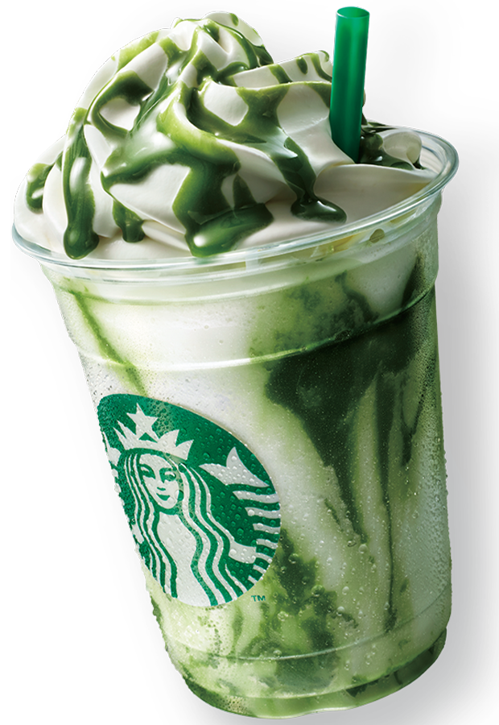

Não é só Café!
Starbucks
Todos os dias esperamos fazer duas coisas: dividir um ótimo café com nossos amigos e ajudar a tornar o mundo um pouquinho melhor. Já era assim quando a primeira Starbucks abriu em 1971 e continua sendo assim até hoje.
Saber mais!
